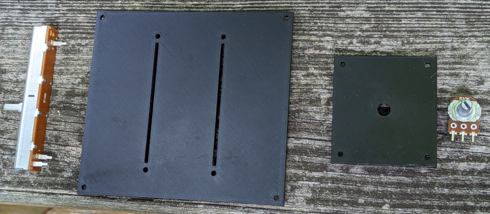
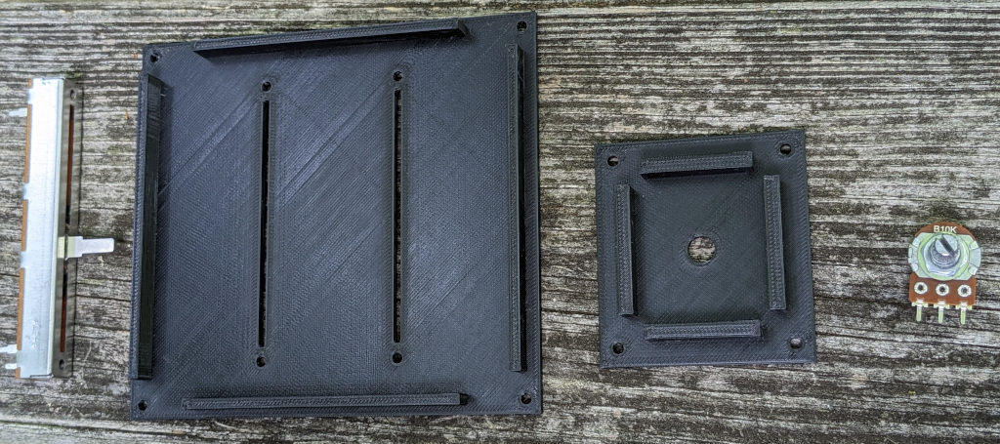
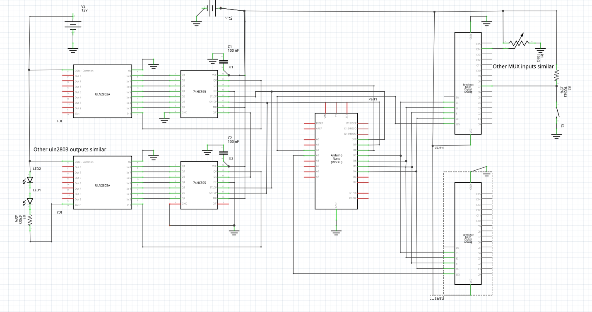
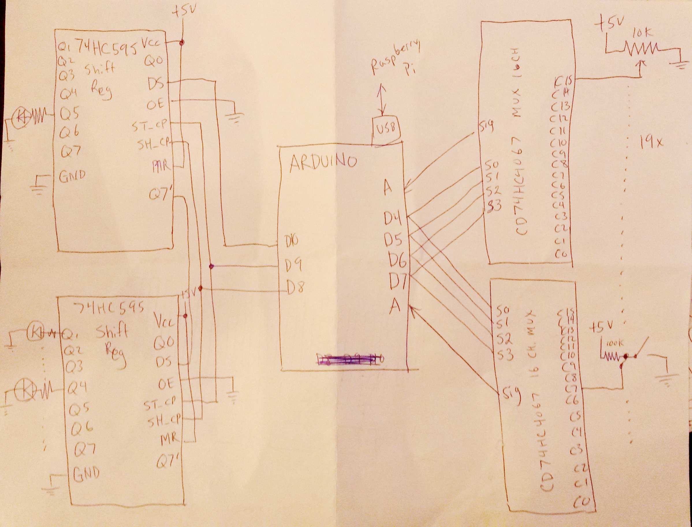

The basic idea is that we can run many (but not all) of the Space Nerds in Space bridge stations on a Raspberry Pi, and have an arduino connected to the Pi, and connected to the arduino can be a load of potentiometers and switches and LEDs. These potentiometers and switches can be logically connnected to buttons and sliders within the game. The arduino can poll the state of the switches and potentiometers and report changes to the game via the USB serial back to a process on the the raspberry pi which can then feed these changes into the game via the interface provided by snis-device-io.h. Likewise, LEDS for warning lights, etc. can be controlled from the game via USB serial to to the arduino. In this way we can build a physical console for each of the stations to make the game seem a little more like a spaceship and little less like a computer game.
Why Arduino? Because arduino is accessible and open source. It's possible other people besides me may want to build something like this, and Arduino is the easiest, most well-known and popular thing in its class, and most likely to be something that other people will be able to work with.
What if the whole thing shows up as a USB game controller? I already have support in snis_client for customizable game controller setups, so if possible, that seems like a win.
I do have some concerns though. Game controllers have "buttons" and "axes". The send "button up" and "button down" events to the host, and axis movement events (e.g. digitized potentiometer voltage readings). However, a toggle switch isn't so easily modelled. Maybe a "button down + button up" event for "on", and a "button up" event for off could work? And what about controlling LEDs? Not sure how that is done. If these can be solved, then a USB game controller would require much less work on the software end of things, I think. Also, I was thinking about making some dial gauges with servos or stepper motors, and those would need to be controlled somehow. I don't think game controllers have any such capabilities.
Hmm, SDL2 has:
int SDL_GameControllerSetLED(SDL_GameController *gamecontroller, Uint8 red, Uint8 green, Uint8 blue);
gamecontroller The controller to update
red The intensity of the red LED
green The intensity of the green LED
blue The intensity of the blue LED
So... gamecontrollers only have one LED, and it's an RGB LED and all you can do is set the color? That's not really going to work.
Some GPL'ed software for ATMega here: https://www.raphnet.net/electronique/usb_game12/index_en.php#2
One of the things which has been holding up this SNIS Consoles projects is that I didn't have a good idea about how to physically build the control panel surface that I found entirely satisfactory.
The "professional" way to do it is to get some sheet steel or aluminum and cut and drill holes of the right sizes and shapes, deburr, powder coat, and screw all the components (potentiometers, switches, faders, etc.) into the panel. That gets expensive real quick. If you're Mr. Behringer, and you have a load of factories in China, that's no problem, but I'm just a guy, I don't even have a garage. A cheaper and easier way that is common among hobbyists is to laser cut acrylic sheets and use that instead of steel or aluminum. But for me, there are a few of problems with this. First, it has a certain look. Perfect if you're going for a Star Trek LCARS styel panel, but that's not what I'm going for. I'm going for something a little more "Apollo capsule", or "fighter jet cockpit". Second, if the panel is thin enough to mount inexpensive potentiometers and it is large, it might flex too much. This can be mitigated by gluing beams of reinforcement webbing on the underside of the panel though. Finally, while acrylic initially looks great (if that's the look you're going for) it has a tendency to get scratched up over time, especially for something that is hands-on, like a control panel.
But now I think I have come up with a method that should be inexpensive, durable, easy, good looking (with some paint), and did I mention inexpensive?
Here's the idea: Make the panel out of thin plywood. Cut out large rectangular holes for panel inserts. Mount the hardware (pots, switches, faders, etc) to the panel inserts with a laser cutter. Finally, make the panel inserts by 3D printing them. That's right, 3D printing. Doing it this way, the panel and inserts are practically free (assuming you have access to a 3D printer and a laser cutter, which if you're in a reasonably large city with a makerspace, you probably do have such access.)
Here are a couple prototype panel inserts I printed yesterday, one to hold a couple 60mm faders and one to hold a potentiometer. They feel pretty sturdy.

Prototype panel insert, front

Prototype panel insert, back
No dimensions on a 3D print survive first plastic, and these are no exceptions. The hole for the potentiometer is slightly too small, and the face plate is a little too thick, and the screw holes for the faders don't match up quite right, but you get the idea, and with tweaking it can be made to work.
Speaking of the screws, I have another idea for the 2nd iteration. I was looking at the 60mm fader, and I noticed that it has a little circuit board on the bottom, and the circuit board is held tightly to the metal casing by little metal tabs that are part of the casing, and folded over to hug the circuit board. Hmm. It occurs to me that I may not need all these screws, which it turns out can be surprisingly expensive to source. I can integrate some plastic clips and ridges into the back side of the panel insert to allow the faders to just be snapped into place. Likewise, I can add some clips around the edges of the panel inserts so they can just snap into the plywood control panel.
Came across this video of an interesting gauge:
It uses an X27-589 stepper motor (same as X27-168 but with pins on the front side). Recommended stepper driver: Vid6606 (STI6606) 4x Stepper Driver for X27.168
This solution appears to be quite expensive (for me), about $20 for the stepper motor and $24 for the stepper motor driver. With manufactured PCBs, maybe it's around $40-$50 per gauge.
More ideas from this other video, some gauges using cheap servo motors: https://www.youtube.com/watch?v=Ib9axlfK0f4 (9g servo motors can be had for around $2 apiece, which is more my speed.)
Implemented an idea by Shadow8472, which is to allow running snis_client with no textures (actually with 1 bogus textures). Many of the stations (Navigation, Engineering Damage Control, Science, and COMMs) do not use any textures. For phyiscal consoles which are meant to be used with a single station, it doesn't make sense to load all these textures only to not use any of them. So I added a "--no-textures" option to snis_client and an item in the "Options" menu of snis_launcher to enable it. Briefly observing the resident memory usage of snis_client with htop showed it using about 700M with textures and about 300M without, saving 400M, over half the memory used.
Tested out my amplifiers and speakers:
Got pico2wave working on Raspberry pi.
Needed to:
wget -q https://ftp-master.debian.org/keys/release-10.asc -O- | sudo apt-key add - echo "deb http://deb.debian.org/debian buster non-free" | sudo tee -a /etc/apt/sources.list sudo apt-get update sudo apt-get install libttspico-utils
Also needed to install pulseaudio and sox (sox for "play" command).
sudo apt-get install pulseaudio sudo apt-get install soxI think that's it... might have been some more steps though. Will have to try with additional Raspbery Pi's and update these instructions if necessary.
Received 5 pairs of speakers.
Added some test code to snis_console program, and fixed some bugs in the code. Now I think it should be working right. Still need to add code to snis client to send LED data to snis_arduino, and modify snis_arduino to forward this data to the arduino.
Received 5x 20W/ch class D stereo amplifiers based on YDA136-E. Haven't tried them yet. Still awaiting speakers.
Received 200 each of 560 and 470 ohm resistors. I think that's the last of the parts I need to begin assembling a board.
Ordered 5 YDA138 based 20W/ch amplifiers and 5 pairs of 5W speakers from Aliexpress (total was $50.xx).
Received shipment of 3 24-inch monitors, 4 HDMI cables, and 5 Arduino Nano clones (but only one USB cable for the Arduinos, so I'll need some more USB cables.)
Received shipment of 200 white LEDs, 120 tactile switches, 5 12V power supplies, and 4 power strips,
Some notes about the shift register:
---U---
Qb - - Vcc
Qc - - Qa
Qd - - SER (DS)
Qe - - OE (DE)
Qf - - RCLK (ST_CP)
Qg - - SRCLK (SH_CP)
Qh - - SRCLR (MR)
GND - - Vcc
-------
Qa-Qh are outputs.
OE is Output Enable. It must be 0v to enable outputs. (tie to ground).
SRCLR is Shift Register Clear, which clears the shift register
when low.
SER is the serial data input.
SRCLK is the storage register clock
RCLK is the register clock. I think this is a latch which makes this inputs appear
on the outputs. I *think* you can clock in 8 bits via SER and rising edge of
SRCLK, then clock RCLK (rising edge) to have the outputs change all at once.
SRCLR clears the shift register if low. I think I can just tie this to high.
Here is a circuit diagram (no guarantees of correctness):

Got my aviation style 3d printed switch case thing working pretty well. Put it on Thingiverse.
The LEDs I'm using have a forward voltage of 3.0 to 3.2V. Current should be 15-18mA, and the power supply will be 12V DC. So for resistor, I need:
R = (Vs - Vf) / If
>= (12 - 3.2) / 0.018
<= (12 - 3.0) / 0.015
= 488.8-600 Ohm
power = (12 - 3.0) * 0.018
= 0.1628W (so, 1/4th watt resistor).
That's for 1 LED, for 2 LEDs in series:
R = (Vs - Vf) / If
>= (12 - 3.2 - 3.2) / 0.018
<= (12 - 3.0 - 3.0) / 0.015
= 311-400 Ohm
power = (12 - 3.0 - 3.0) * 0.018
= 0.108W (so, 1/4th watt resistor).
So, for single LED, I need some 600 Ohm 1/4W resistors, and for double LEDs in series, 400 Ohm 1/4W resistors.
Testing this out, it might be a little bright, so might need to up the resistor values, or put another resistor in series with all the LEDs to drop the voltage down a bit. Experimenting, 5V with two LEDs just barelly turns them on, 6V turns them on dimly, then the brightness ramps up as you crank the voltage up to 12V. Probably 8 or 9V is about right.
It seems that powering the Arduino via the Raspberry Pi's USB is fine, however, there's not a lot of current available, so I will need to have another 5v power supply for powering LEDs.
For switches, the lighted Apollo mission type switches are called Tellite switches and they are prohibitively expensive. However, I might be able to come up with a reasonable facsimile using some cheap LEDs, laser cut acrylic and laser printed paper labels to fit over some cheap push buttons.
It seems I'm not the only one with approximately this idea:
Here is the pushbuttons design on thingiverse. Looks like he deleted the design files, but maybe something here: https://www.tinkercad.com/things/fQeSDCBttU3-push-buttons. However, I'd want to design my own anyway with OpenSCAD.
Going through the screens, here are the switches and pots needed:
Totals:
Was talking with Rob last night at HackRVA, and we are going to build a vacuum forming machine. This should help with building the cases for the consoles. I have a few ideas about how to paint them. One idea, vacuum form them from clear PETG, then paint the inside with silver paint. Should look like mylar, more or less. Not sure I like that idea. Another idea, put some HVAC tape on select edges, paint with black, dark gray, or hammered metal, then sand off a bit to expose some of the silver HVAC tape. I think I'll probably do the latter method.
I changed the protocol used over the serial USB so that the '#' is replaced by the first letter of the station, so 'E' for engineering, 'C' for comms, 'W' for weapons, 'S' for science, 'D' for demon, 'N' for navigation. Only engineering is implemented yet. I'm using a #define to control which station the code compiles for.
Ordered 20 ULN2803 darlington arrays to drive LEDs from amazon, should be here in 2-4 weeks. Ordered some shift registers and male pin headers from futurlec, who knows when those will arrive. (I noticed there are some male pin heads lying around HackRVA though, so no need to wait for those, ha.)
Looking into building a vacuum forming machine to use for making the console cases.
Made some progress, there's a new program in the space-nerds-in-space repo called snis_arduino that reads from the arduino and passes along commands from the arduino to snis_client. I updated the program which runs on the arduino itself (snis-console.c.ino) so it actually works. The main change I made was to switch to a text protocol from binary. This avoids de-syncing as I can look for a newline to delimit the commands. Now the commands from the arduino to the host (raspberry pi) are of the form: "#xxx=yyy\n", where xxx is the input number (0 - 31) and yyy is the value for that input. The values are only reported to the host if they differ from the previous sampling by more than 3.
Another change I made on the host side (snis_arduino) has to do with the problem I was seeing in which it would read a little bit then quit upon encountering EOF. It turns out that reading from /dev/ttyACM0 is apparently non-blocking, despite not opening it with O_NONBLOCK, which sort of surprises me. So I changed the code to simply wait for a few milliseconds and try again upon encountering EOF, and this seemed to make it work.
Video here: https://www.youtube.com/watch?v=51ljGNx3px4.

On the output side, two daisy chained shift registers allow up to 16 LEDs to be controlled. Likely I will need to add NPN transistors to drive each of the LEDs to avoid drawing too much current from the shift registers.
Pseudocode for the arduino will be something along these lines:
static int new_value[32] = { 0 };
static int old_value[32] = { 0 };
static int led_status[16] = { 0 };
setup()
{
Set up 4 digital outputs D4 thru D7 for selecting the multiplexer channels.
Set up 2 analog inputs for the multiplexer signals.
Set up 3 digital outputs for the shift register controls
set up interrupt handler for incoming serial data
}
select_multiplexer_channel(int n)
{
D4 = i & 0x01;
D5 = (i >> 1) & 0x01;
D5 = (i >> 2) & 0x01;
D5 = (i >> 3) & 0x01;
}
sample_inputs_from_multiplexer(int new_value[])
{
for (int i = 0; i < 16; i++) {
select_multiplexer_channel(i);
new_value[i] = read_multiplexer(0);
new_value[i + 16] = read_multiplexer(1);
}
}
transmit_changes(new_value, old_value)
{
for (i = 0; i < 32; i++) {
if (old_value[i] != new_value[i])
transmit_value(i, new_value[i]);
}
}
update_led_status()
{
/* Shift LED data out to shift register */
for (i = 0; i < 16; i++) {
set DS = 0;
set ST_CP = led_status[i];
set DS = 1;
}
set DS = 0;
/* Latch LED data (need to double check this is how it works) */
set SH_CP = 0;
set SH_CP = 1;
set SH_CP = 0;
}
serial_interrupt_handler()
{
/* still need to work out whatever the protocol is for LED data */
/* Could be just pairs of bytes. */
get_character_from_serial()
decode_character();
}
loop()
{
sample_inputs_from_multiplexer(new_value);
transmit_changes(new_value, old_value);
memcpy(old_value, new_value, sizeof(old_value));
update_led_status();
}